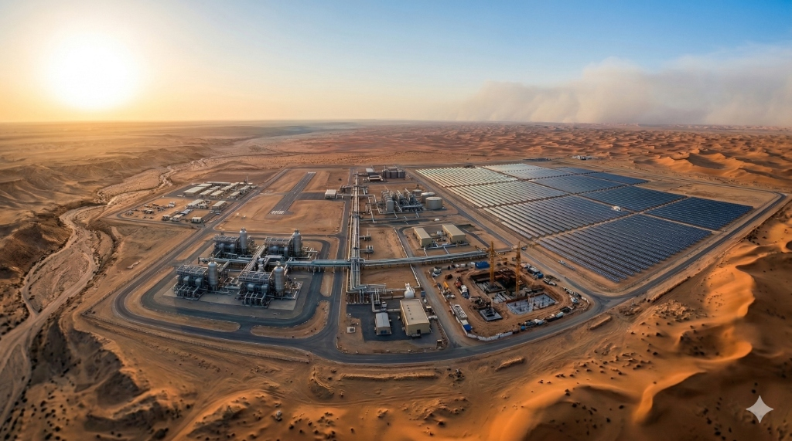
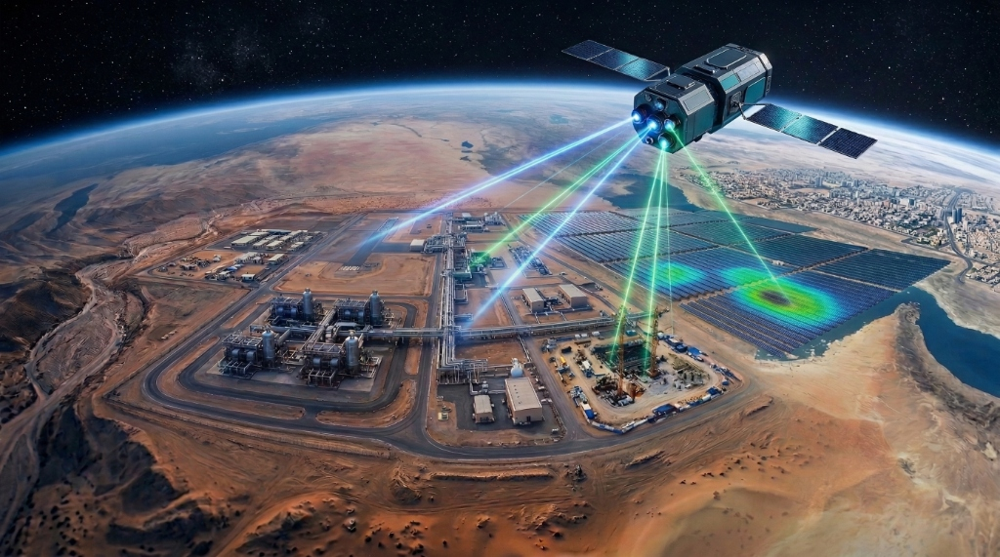

SAHARYN AI combines space-borne satellite intelligence with physics-informed causal mechanics to monitor sandstorms, thermal decay, and abrasion—predicting industrial asset failures up to 48 hours in advance across Saudi Arabia and the Middle East.


Protecting national critical infrastructure against extreme sandstorms, high ambient heat, and abrasive dust cycles.
Preventing compressor surge, gas turbine blade erosion, and seal failures in desert production facilities across the Eastern Province and Rub' Al Khali.
GAS COMPRESSORS & PUMPSForecasting turbine intake filter clogging and transformer thermal breakdown during regional dust storm events.
COMBINED CYCLE TURBINESMonitoring high-pressure intake pumps and reverse osmosis filtration membranes subject to high particulate loads and salinity.
HIGH-PRESSURE RO PUMPSEliminating the "black-box" dilemma of standard machine learning through verifiable physics and mathematical proof.
Direct programmatic ingestion of NASA MODIS (MOD04_L2) and Copernicus Sentinel-2/CAMS. Real-time mapping of particle diameter, AOD, and kinetic dust momentum.
NASA & ESA LIVE INGESTIONSolving boundary condition Navier-Stokes and Arrhenius chemical degradation equations in real time to model abrasion kinetics and thermal stress.
PINNs & ARRHENIUS DECAYA strict 11-node Directed Acyclic Graph (DAG) enforcing anti-hallucination. Generates step-by-step cryptographic causal chains from weather triggers to mechanical outcomes.
IEEE 1232 COMPLIANTCalculates financial ROI and avoided loss metrics for every condition. Generates clear, advisory operational directives (e.g. backflush HEPA filtration, dynamic load modulation).
ROI-DRIVEN PRESCRIPTIONSQuantifies Scope 3 lifecycle manufacturing carbon avoided by extending asset useful life. Every claim is cryptographically chained with SHA-256 Merkle proofs for audit defensibility.
ISO 14064-3 ALIGNEDCritical national infrastructure requires absolute data sovereignty. Instantly sever cloud uplinks and execute 100% of causal inference locally inside Riyadh or NEOM industrial boundaries.
ZERO DATA EGRESSEngineered in strict alignment with international cybersecurity, explainability, and carbon accounting protocols.